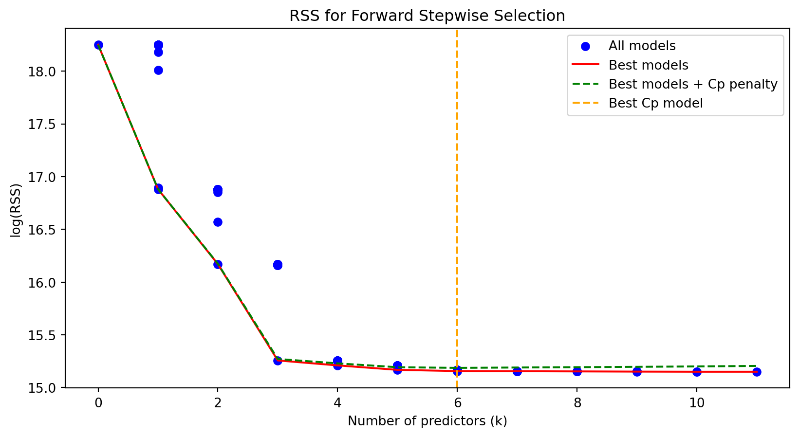
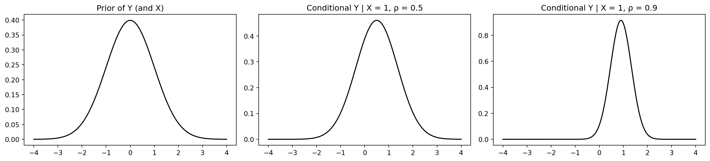
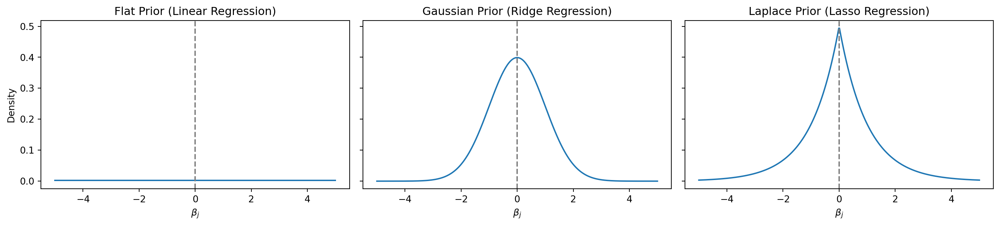
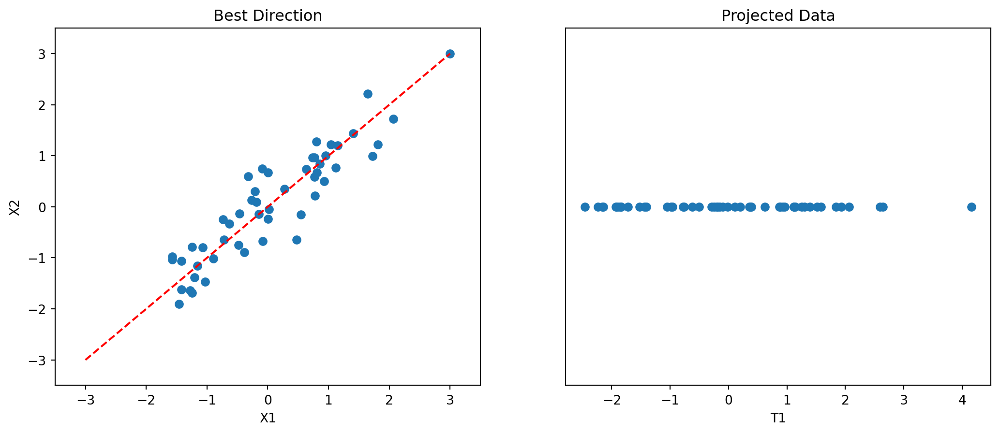

Introduction to Statistical Learning
Feat. Selection and Regularization - Class 8
Giora Simchoni
gsimchoni@gmail.com and add #intro2sl in subject
Stat. and OR Department, TAU
Goals of Selection and Regularization
Why select features? Why regularize?
E.g., did we not see the Gauss-Markov Theorem?
- Improve prediction accuracy
- Recall: the Bias-Variance Tradeoff \(\Rightarrow\) allowing some bias might decrease variance!
- Recall: \(op \approx \mathcal{O}\left(\frac{p\sigma^2}{n}\right)\)
- If \(p > n\): \(X^TX\) has no inverse, infinite solutions
- Improve interpretability
Discarding features with small “unlikely” coefficients
\(\Rightarrow\) lowering model complexity
\(\Rightarrow\) parsimony!
Often coincides with improving prediction accuracy
- In general: “don’t believe everything the data says”
Feature Selection and Regularization
We will focus on:
- Subset selection (best, stepwise, stagewise)
- Regularized regression (Ridge, Lasso)
- Dimensionality reduction (PCR)
Subset Selection
Best subset selection
- \(M_0\) model: predict \(\hat{y} = \hat{\beta}_0 = \bar{y}\)
- For \(k = 1, \dots, p\):
- Fit all \({p \choose k}\) models containing \(k\) features
- Pick the best \(M_k\) with \(\min RSS\)
- Select the best model from \(M_0, \dots, M_p\) with the \(C_p\)/\(AIC\) criterion or CV
Best subset selection
How many models are run?
Forward stepwise selection
- \(M_0\) model: predict \(\hat{y} = \hat{\beta}_0 = \bar{y}\)
- For \(k = 0, \dots, p - 1\):
- Fit all \(p - k\) models adding 1 additional feature
- Pick the best \(M_{k + 1}\) with \(\min RSS\)
- Select the best model from \(M_0, \dots, M_p\) with the \(C_p\)/\(AIC\) criterion or CV
Forward stepwise selection

How many models are run?
Stepwise regression main disadvantage
| k | Best subset | Forward stepwise |
|---|---|---|
| 1 | {Rating} | {Rating} |
| 2 | {Rating, Income} | {Rating, Income} |
| 3 | {Rating, Income, Student} | {Rating, Income, Student} |
| 4 | {Income, Student, Limit, Cards} | {Rating, Income, Student, Limit} |
What happens if \(p > n\)?
Forward stagewise selection
- Standardize all features, input some \(\tau_{thresh} \in (0, 1)\) and \(\varepsilon > 0\) step size
- Residual \(\mathbf{r} = \mathbf{y} - \bar{y}\), \(\beta_1, \dots, \beta_p = 0\)
- Find the predictor \(\mathbf{x}_j\) most correlated with \(\mathbf{r}\), and let \(\tau = Corr(\mathbf{r}, \mathbf{x}_j)\)
- While \(|\tau| > \tau_{thresh}\):
- Update \(\beta_j \leftarrow \beta_j + \delta_j\), where \(\delta_j = \varepsilon \cdot \text{sign}(\tau)\)
- Update \(\mathbf{r} \leftarrow \mathbf{r} - \delta_j\mathbf{x}_j\)
- Find the predictor \(\mathbf{x}_j\) most correlated with \(\mathbf{r}\), and let \(\tau = Corr(\mathbf{r}, \mathbf{x}_j)\)
Why would we want to “slow-learn”?
Regularized Regression: Ridge
Ridge regression
Instead of reducing the number of parameters \(\Rightarrow\) constrain them, penalize their norm
With \(\ell_2\) norm we get the penalized RSS criterion for some regularization/penalty parameter \(\lambda > 0\): \[PRSS(\lambda) = \sum_{i = 1}^n \left(y_i - \beta_0 + \sum_{j = 1}^p \beta_j x_{ij}\right)^2 + \lambda\sum_{j = 1}^p \beta_j^2 = RSS + \lambda\|\beta^*\|^2_2\]
Standardize the features in \(X\), then:
- \(\hat{\beta}_0 = \bar{y}\)
- \(\lambda\) punishes features of different scale comparably
Ridge solution
\[PRSS(\lambda) = \|y - X\beta\|^2_2 + \lambda\|\beta\|^2_2\]
\(\frac{\partial PRSS}{\partial \beta} = -2X^Ty + 2X^TX\beta +2\lambda\beta\)
\(2X^Ty - 2X^TX\beta - 2\lambda\beta = 0\)
\((X^TX + \lambda I_p)\beta = X^Ty\)
\(\hat{\beta}(\lambda) = (X^TX + \lambda I_p)^{-1}X^Ty\)
Ridge (original) justification
\[\hat{\beta}(\lambda) = (X^TX + \lambda I_p)^{-1}X^Ty\]
- Numerical stability:
- If \(X\)’s columns are highly correlated, \(X^TX\) is ill-conditioned and its inverse is unstable, variance of \(\hat{\beta}\) is high – but \(X^TX + \lambda I_p\) improves on this
- Feasibility:
- If \(X\)’s columns are linearly dependent \(X^TX\) is not invertible but \(X^TX + \lambda I_p\) is!
- If \(p > n\): same!
- Guaranteed prediction error reduction for some \(\lambda\):
- Bias increases but variance decreases more
Choosing the \(\lambda\) hyperparameter
Regularized Regression: Lasso
Lasso regression
\[PRSS(\lambda) = \sum_{i = 1}^n \left(y_i - \beta_0 + \sum_{j = 1}^p \beta_j x_{ij}\right)^2 + \lambda\sum_{j = 1}^p |\beta_j| = RSS + \lambda\|\beta^*\|_1\]
- As with Ridge, standardize the features in \(X\), then:
- \(\hat{\beta}_0 = \bar{y}\)
- \(\lambda\) punishes features of different scale comparably
The Lasso Path
- Lasso’s selling point: sparsity!
- Highly useful, especially for \(p > n\) datasets
Lasso solution
- Quadratic Programming, LARS
- But also, surprisingly:
On Shrinkage and Sparsity
Dual criteria
There is 1-to-1 correspondence between Ridge and Lasso’s previous criteria and:
- Ridge: \(\min_{\beta} RSS \text{ s.t. } \sum_{j = 1}^p\beta_j^2 \le s\)
- Lasso: \(\min_{\beta} RSS \text{ s.t. } \sum_{j = 1}^p|\beta_j| \le s\)
In this context we can also write for Best Subset regression:
- \(\min_{\beta} RSS \text{ s.t. } \sum_{j = 1}^p\mathbb{I}\left[\beta_j \neq 0\right] \le s\)
Seeing Shrinkage and Sparsity (I)
Seeing Shrinkage and Sparsity (II)
If \(X\) has orthonormal columns (\(X^TX = I_p\)) and \(\hat{\beta}_j\) is the OLS estimator:
| Estimator | \(\tilde{\beta}_j\) |
|---|---|
| Best \(M\) subset | \(\hat{\beta}_j \cdot \mathbb{I}\left[|\hat{\beta}_j| \ge |\hat{\beta}_{(M)}|\right]\) |
| Ridge | \(\hat{\beta}_j / (1 + \lambda)\) |
| Lasso | \(\text{sign}(\hat{\beta}_j)(|\hat{\beta}_j| - \lambda)_+\) |

Bayesian Viewpoint
Conditional Distribution
Recall Bayes Rule: \[P(B | A) = \frac{P(A | B) \cdot P(B)}{P(A)} \text{ or } \text{posterior} = \frac{\text{likelihood}\cdot\text{prior}}{\text{evidence}}\]
For continuous distributions: \[f_{Y|X}(y|x) = \frac{f_{X|Y}(x|y)f_Y(y)}{f_X(x)} \propto f_{X|Y}(x|y)f_Y(y)\]
\(f_{Y|X}\) may not always have closed form, but sometimes…
Conditional Gaussian
For Gaussian distribution, if \(X \sim \mathcal{N}(\mu_X, \sigma^2_X), Y \sim \mathcal{N}(\mu_Y, \sigma^2_Y), \rho = Corr(X, Y)\): \[Y | X = x \sim \mathcal{N}\left(\mu_Y + \frac{\sigma_Y}{\sigma_X}\rho(x - \mu_X), (1 - \rho^2)\sigma_Y^2\right)\]

Bayesian Statistics
- In Bayesian statistics a parameter \(\theta\) isn’t a fixed number but a RV having a prior distribution \(P(\theta)\)
- In comes data sample \(Y = y_1, \dots, y_n\) with distribution \(P(Y | \theta)\) (likelihood)
- We calculate the posterior distribution given the data \(P(\theta|Y) \propto P(Y|\theta)P(\theta)\)
- \(\theta\)’s final estimate is the mean or mode of \(P(\theta|Y)\)
Why would we take this approach?
- For linear regression and normal prior:
- Prior: \(\beta \sim \mathcal{N}(0, \tau^2I_p)\)
- Data: \(Y | \beta \sim \mathcal{N}(X\beta, \sigma^2I_n)\)
- Posterior: \(\beta|Y \sim \mathcal{N}\left((X^TX + \frac{\sigma^2}{\tau^2}I_p)^{-1}X^Ty, \Sigma\right)\)
Ridge and Lasso priors

Dimensionality Reduction Methods: PCR
Recall: PCA
PCA will find the best direction to project the data on, while preserving the maximum “information”:

The PCA Problem
Goal: Find the \(q\) direction(s) with the most dispersion
Projection is direction \(\mathbf{v}\): \(X\mathbf{v} \in \mathbb R^n.\) Examples:
- \(\mathbf{v} = (1,0,\dots,0)^T\): pick first coordinate from each observation
- \(\mathbf{v} = (1/\sqrt{p},1/\sqrt{p},\dots,1/\sqrt{p})^T\): project on diagonal (average all coordinates)
Dispersion in direction \(\mathbf{v}\): \(||X\mathbf{v}||^2 = \mathbf{v}^T(X^TX)\mathbf{v}.\)
Finding the best direction which maximizes dispersion: \(\mathbf{v}_1 = \arg\max_{\mathbf{v}:\|\mathbf{v}\|^2 =1} \|X\mathbf{v}\|^2\)
\(\mathbf{v}_1\) is the first Principal Component direction: the best direction to project on!
Similarly find the next PC directions \(\mathbf{v}_2, \dots, \mathbf{v}_q\) and stack them to matrix \(W_{p \times q}\)
Data with reduced dimensionality:
- \(T_{n \times q} = X_{n \times p}W_{p \times q}\) taking only the first \(q\) principal directions
PCA regression (PCR)
- Standardize the features in \(X\)
- Find \(W_{p \times q}\) (usually via SVD decomposition)
- Perform (regular) linear regression on \(T_{n \times q} = XW\) \[y_i = \theta_0 + \theta_1 \cdot t_{i1} + \dots + + \theta_q \cdot t_{iq} + \varepsilon_i \quad \text{ or } \quad y = T\theta + \varepsilon\]
- \(q\) becomes a hyperparameter
- \(y = T\theta + \varepsilon = X(W\theta) + \varepsilon \to \beta = W\theta\), hence \(\beta\) is still constrained
- SVD decomposition also shows similarities to Ridge regression